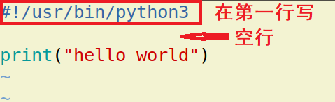

Linux 操作系统
| Python 教学部 |
|---|
| Author：吕泽 |
Linux 操作系统1. Linux操作系统认知1.1 操作系统（Operation System简称OS）1.2 Linux系统介绍1.3 文件系统1.4 Ubuntu使用 2. Linux常用命令2.1 终端与命令行2.2 Linux常用命令2.2.1 帮助命令2.2.2 基础操作命令2.2.3 文件操作2.2.4 压缩解压2.2.5 权限管理2.2.6 显示展示命令2.2.7 其他命令3. Linux服务器环境3.1 vi编译器3.1.1 什么是vi3.1.2 学习目的3.1.3 操作使用3.2 添加用户3.2.1 基本概念3.2.2 用户管理命令3.3 软件安装3.4 ssh服务3.5 终端启动Python服务
1. Linux操作系统认知
1.1 操作系统（Operation System简称OS）
定义
操作系统是管理计算机硬件与软件资源的计算机程序，同时也是计算机系统的内核与基石。操作系统需要处理如管理与配置内存、决定系统资源供需的优先次序、控制输入设备与输出设备、操作网络与管理文件系统等基本事务。

操作系统功能
- 管理好硬件设备，为用户提供调用方法
- 是计算机中最重要的系统环境
- 管理各种其他的软件和程序的运行
- 对系统中文件进行管理
操作系统分类
- 桌面系统：Windows ，macOS为主，图形界面良好用户群体大。
- 服务器系统：Linux，Unix为主，安全，稳定，费用低占有量大。windows占有率很低。
- 嵌入式系统：Linux为主，主要用于小型只能设备，如只能 手机，机器人等。
1.2 Linux系统介绍
Linux 诞生
1991 年 林纳斯（Linus） 就读于赫尔辛基大学期间，对 Unix 产生浓厚兴趣，林纳斯 经常要用他的终端 仿真器（Terminal Emulator） 去访问大学主机上的新闻组和邮件，为了方便读写和下载文件，他自己编写了磁盘驱动程序和文件系统，这些在后来成为了 Linux 第一个内核的雏形，当时，他年仅 21 岁！林纳斯利用C做工具，编写了 Linux 内核，一开始 Linux 并不能兼容 Unix只适用于 386，后来经过全世界的网友的帮助，最终能够兼容多种硬件。

Linux系统特点
- Linux是一款免费的操作系统
- 支持多种平台
- 支持多用户
- 具有非常强大的网络功能
Linux 应用领域
Linux 服务器 : 目前是服务器系统中最广泛一种。
桌面应用: 新版本的Linux系统特别在桌面应用方面进行了改进，达到相当的水平
嵌入式系统：由于Linux系统开放源代码，功能多样且具有极大的伸缩性，因此在嵌入式应用的领域有很广阔的应用市场。
Linux系统构成
内核: Linux操作系统的核心代码，是Linux系统的心脏，提供了系统的核心功能，用来与硬件交互。
Linux内核官网 : http://www.kernel.org
文件系统：通常指称管理磁盘数据的系统，可将数据以目录或文件的型式存储。每个文件系统都有自己的特殊格式与功能
命令解释器：它使得用户能够与操作系统进行交互，负责接收用户命令，然后调用操作系统功能。
应用软件：包含桌面系统和基础的软件操作工具等。
Linux发型版本
严格的来讲，Linux 只是一个系统内核，即计算机软件与硬件通讯之间的平台。一些组织或厂家将 Linux 内核与GNU软件（系统软件和工具）整合起来，并提供一些安装界面和系统设定与管理工具，这样就构成了一个发型套件，目前市面上较知名的发行版有：Ubuntu、RedHat、CentOS、Debian、Fedora、SuSE、OpenSUSE、Arch Linux、SolusOS 等。
1.3 文件系统
定义
文件系统是计算机操作系统的重要的组成部分，用于组织和管理计算机存储设备上的大量文件。
文件系统结构
- 熟悉的windows文件系统，分不同盘符

- Linux的文件组织中没有盘符。将根（/）作为整个文件系统的唯一起点，其他所有目录都从该点出发。
犹如一颗倒置的树，所有存储设备作为这颗树的一个子目录。

普通文件和目录
- 普通文件：包括文本，压缩包，音频视频等文件都是普通文件。
- 目录：即文件夹，在Linux系统下多称之为目录。

主要目录功能
x1. /bin目录• /bin目录包含了引导启动所需的命令或普通用户可能用的命令(可能在引导启动后)。这些命令都是二进制文件的可执行程序(bin是binary----二进制的简称)，多是系统中重要的系统文件。2. /sbin目录• /sbin目录类似/bin，也用于存储二进制文件。因为其中的大部分文件多是系统管理员使用的基本的系统程序，所以虽然普通用户必要且允许时可以使用，但一般不给普通用户使用。3. /etc目录• /etc目录存放着各种系统配置文件，其中包括了用户信息文件/etc/ passwd，系统初始化文件/etc/rc等。linux正是因为这些文件才得以正常地运行。4. /root目录• /root 目录是超级用户的目录。5. /lib目录• /lib目录是根文件系统上的程序所需的共享库，存放了根文件系统程序运行所需的共享文件。这些文件包含了可被许多程序共享的代码，以避免每个程序都包含有相同的子程序的副本，故可以使得可执行文件变得更小，节省空间。6. /dev目录• /dev目录存放了设备文件，即设备驱动程序，用户通过这些文件访问外部设备。比如，用户可以通过访问/dev/mouse来访问鼠标的输入，就像访问其他文件一样。7. /usr文件系统• /usr 是个很重要的目录，通常这一文件系统很大，因为所有程序安装在这里。本地安装的程序和其他东西在/usr/local 下，因为这样可以在升级新版系统或新发行版时无须重新安装全部程序。8. /var文件系统• /var 包含系统一般运行时要改变的数据。通常这些数据所在的目录的大小是要经常变化或扩充的。9. /home• /home 普通用户的默认目录，在该目录下，每个用户拥有一个以用户名命名的文件夹。
绝对路径和相对路径表达
- 绝对路径：指文件在文件系统中以根目录为起始点的准确位置描述。例如“/usr/bin/gnect”就是绝对路径。最要的标志就是以 ‘/’ 作为路径描述的开头。
- 相对路径：指相对于用户当前位置为起始点，对一个文件位置的逐层描述。例如，用户处在usr目录中时，只需要“games/gnect”就可确定这个文件。在相对路径描述时 . 表示当前目录, .. 表示上一级目录。
1.4 Ubuntu使用
作为Linux发行版中的后起之秀，Ubuntu Linux在短短几年时间里便迅速成长为从Linux初学者到资深专家都十分青睐的发行版。由于Ubuntu Linux是开放源代码的自由软件，用户可以登录Ubuntu Linux的官方网址免费下载该软件的安装包。
Ubuntu官网：https://ubuntu.com/

2. Linux常用命令
学习目的
- Linux下有非常丰富的命令，可以用来完成大部分重要的Linux服务器操作维护功能，而且至今有些功能仍然通过命令操作比较方便。
- 实际工作中，大量服务器维护工作都是工程师通过远程控制来完成的，并没有图形界面，这时维护工作都需要通过命令来完成。
- 作为后端工程师，我们将来所写的代码都需要在服务器上运行，掌握基本的Linux 操作命令有助于我们将来对项目的部署和控制工作。
2.1 终端与命令行
- 终端 ： 使用命令对Linux系统进行操作的窗口
- 命令行：书写Linux命令的提示行

打开关闭终端方法
- 点击图形界面终端图标，通过ctrl+alt +t ,shift+ctrl + t , shift+ctrl+n 都可以快速打开一个终端。
- 通过图形界面关闭，或者在命令行输入exit。
终端字体大小控制
- 放大 摁住 ctrl 和 + 号 （不要忘了+号要使用shift）
- 缩小 摁住 ctrl 和 - 号
2.2 Linux常用命令
命令格式
xxxxxxxxxxcommand [-options] [parameter]说明：command：命令名称，一般为英文单词或单词的缩写[-options]：命令选项，辅助命令进行功能细化，也可以省略parameter：传给命令的参数，可以是0个或多个
2.2.1 帮助命令
xxxxxxxxxxcommand --help说明：
显示
command命令的帮助信息
xxxxxxxxxxman command说明：
- 查阅
command命令的使用手册,摁q退出
2.2.2 基础操作命令
| 序号 | 命令 | 作用 |
|---|---|---|
| 01 | ls | 查看当前文件夹下的内容 |
| 02 | pwd | 查看当前所在文件夹 |
| 03 | cd [目录名] | 切换文件夹 |
| 04 | touch [文件名] | 如果文件不存在，新建文件 |
| 05 | mkdir [目录名] | 创建目录 |
| 06 | rm [文件名] | 删除指定的文件名 |
| 07 | cp | 复制一个文件 |
| 08 | mv | 移动一个文件 |
| 09 | clear | 清屏 |
部分命令细节说明
- ls ： -l 展示详细信息，-a展示隐藏文件（Linux下 . 开头的为隐藏文件）。
- cd： 参数为绝对路径或者相对路径，直接cd表示回到主目录。
- touch: 可以同时跟多个参数表示创建多个文件。
- mkdir: -p选项可以创建层目录
- cp：如果拷贝的是一个目录需要使用 -r ，同时这个命令有另存为的作用
- mv: 即使移动目录页不需要选项，有重命名的作用。
- rm：删除表示直接删除，无法找回，如果删除目录需要加 -r选项
- clear：等同于ctrl-l，清空屏幕。
小技巧： 使用Tab键可以自动补全文件名，目录名等信息
通配符
作用：对一类文件名称的书写进行简化，例如file1.txt、file2.txt、file3.txt……，用户不必一一输入文件名，可以使用通配符完成。
通配符 含义 实例 星号（*） 匹配任意长度的字符串 用file_*.txt，匹配file_wang.txt、file_Lee.txt、file_Liu.txt 问号（?） 匹配一个长度的字符 用flie_?.txt，匹配file_1.txt、file_2.txt、file_3.txt 方括号（[…]） 匹配其中指定的一个字符 用file_[otr].txt，匹配file_o.txt、file_r.txt和file_t.txt 方括号（[ - ]） 匹配指定的一个字符范围 用file_[a-z].txt，匹配file_a.txt、file_b.txt，直到file_z.txt
2.2.3 文件操作
| 序号 | 命令 | 作用 |
|---|---|---|
| 01 | cat 文件名 | 查看文件内容、创建文件、文件合并、追加文件内容等功能 |
| 02 | head 文件名 | 显示文件头部 |
| 03 | tail 文件名 | 显示文件尾部 |
| 04 | grep 搜索文本 文件名 | 搜索文本文件内容 |
| 05 | find 路径 -name 文件名 | 查找文件 |
| 06 | wc 文件名 | 查看文件行数，单词数等信息 |
部分命令细节说明
- head，tail ： 选项-n，n表示一个数字，即可指定查看前n行或者后n行，不加选项默认查看10行。
- grep ： -n 用于显示行号，-i忽略大小写
- wc : -c 表示查看多少字符，-l查看多少行，-w 查看多少单词。如果不加选项则显示这三项。
- find：会从指定目录及其所有子目录中查询搜索文件。
2.2.4 压缩解压
| 序号 | 命令 | 作用 |
|---|---|---|
| 01 | zip ，unzip | 将文件压缩为zip格式/将zip格式文件解压 |
| 02 | gzip，gunzip | 将文件压缩为gz格式/将gz格式文件解压 |
| 03 | bzip2,bunzip2 | 将文件压缩为bz2格式/将bz2格式文件解压 |
| 04 | tar | 对gz或者bz2格式进行压缩解压 |
部分命令细节说明
zip： 用于常与windows交互的情况，-r选项可以压缩目录
zip test.zip filelist
unzip test.zip
gzip，bzip2：不常用，因为压缩或者解压后源文件就不再了，而且只能对一个文件操作
tar：-cjf 用于压缩bz2格式文件，-czf用于压缩gz格式文件，-xvf用于解压文件,兼容了gzip和bzip2命令的功能。
tar -czf file.tar.gz file1 file2
tar -xvf file.tar.gz
2.2.5 权限管理
| 序号 | 命令 | 作用 |
|---|---|---|
| 01 | sudo | 放在一个命令前，表示使用管理员权限执行 |
| 02 | chmod | 修改文件权限 |
部分命令细节说明
- sudo： 在打开终端第一次使用sudo时需要输入密码
chmod在设置权限时，可以字母也可以使用三个数字分别对应 拥有者 ／ 组 和 其他 用户的权限
xxxxxxxxxx直接修改文件|目录的 读|写|执行 权限，但是不能精确到 拥有者|组|其他chmod augo+/-rwx 文件名/目录名 
例如：
777===>u=rwx,g=rwx,o=rwx755===>u=rwx,g=rx,o=rx644===>u=rw,g=r,o=r
2.2.6 显示展示命令
| 序号 | 命令 | 作用 |
|---|---|---|
| 01 | echo | 向终端打印内容 |
| 02 | date | 显示当前时间 |
| 03 | df | 显示磁盘剩余空间 |
| 04 | whoami | 显示当前用户 |
| 05 | which | 显示执行命令所在位置 |
部分命令细节说明
- echo ： -n表示打印完成不换行
- df: -h选项以M为单位显示，-T显示文件系统类型 ext4的为磁盘
- which：命令也是一个程序，实际就是显示程序所在位置
输出重定向
重定向符 含义 实例 > file 将file文件重定向为输出源，新建模式 echo "hello world" > out.txt，将执行结果，写到out.txt文件中，若有同名文件将被删除 >> file 将file文件重定向为输出源，追加模式 ls /usr >> Lsoutput.txt，将ls /usr的执行结果，追加到Lsoutput.txt文件已有内容后 管道
管道可以把一系列命令连接起来，意味着第一个命令的输出将作为第二个命令的输入，通过管道传递给第二个命令，第二个命令的输出又将作为第三个命令的输入，以此类推。
xxxxxxxxxx ls | grep 'test'
2.2.7 其他命令
| 序号 | 命令 | 作用 |
|---|---|---|
| 01 | shutdown | 关机或者重启 |
| 02 | ln | 创建链接 |
部分命令细节说明
shutdown：
shutdown -r now 立即重启
shutdown now 立即关机
shutdown +10 10分钟后关机
shutdown -c 取消关机计划
ln : 一般使用 -s 选项 创建软链接，相当于快捷方式，如果跨目录创建要使用绝对路径。
xxxxxxxxxxln -s hello.py hello
3. Linux服务器环境
3.1 vi编译器
3.1.1 什么是vi
vi是Linux操作系统中一个自带的编辑器。没有图形界面，只能编译文本内容，没有字体段落等设置，通过命令强大的命令完成一系列的编写工作。
3.1.2 学习目的
- 在实际工作中，要对 服务器上的文件进行 简单 的修改，使用
vi进行快速的编辑即可。 - 对一些配置文件的修改，需要一定的权限，这时vi编辑器是最佳选择。
- vi 编辑器在 系统管理、服务器管理编辑文件时，其功能不是图形界面的编辑器能比拟的。
3.1.3 操作使用
- 打开和新建文件
xxxxxxxxxx$ vi 文件名如果文件已经存在，会直接打开该文件如果文件不存在，会新建一个文件工作模式
命令模式
- 打开文件首先进入命令模式，是使用
vi的 入口 - 通过 命令 对文件进行常规的编辑操作，例如：定位、翻页、复制、粘贴、删除……
- 在其他图形编辑器下，通过 快捷键 或者 鼠标 实现的操作，都在 命令模式 下实现
- 打开文件首先进入命令模式，是使用
底行模式 —— 执行 保存、退出 等操作
- 要退出
vi返回到控制台，需要在末行模式下输入命令 - 末行模式 是
vi的 出口
- 要退出
编辑模式 —— 正常的编辑文字

- 进入编辑模式命令
| 命令 | 英文 | 功能 | 常用 |
|---|---|---|---|
| i | insert | 在当前字符前插入文本 | 常用 |
| I | insert | 在行首插入文本 | 较常用 |
| a | append | 在当前字符后添加文本 | |
| A | append | 在行末添加文本 | 较常用 |
| o | 在当前行后面插入一空行 | 常用 | |
| O | 在当前行前面插入一空行 | 常用 |
- 底行模式常用命令
| 命令 | 功能 |
|---|---|
| w | 保存 |
| q | 退出，如果没有保存，不允许退出 |
| q! | 强行退出，不保存退出 |
| wq | 保存并退出 |
| w! | 强制保存 |
命令模式常用命令
- 1）行内移动
命令 功能 w 向后移动一个单词 b 向前移动一个单词 0 行首 ^ 行首，第一个不是空白字符的位置 $ 行尾 - 2） 行数移动
命令 功能 gg 文件顶部 G 文件末尾 :数字 移动到 数字 对应行数
- 撤销和恢复撤销
| 命令 | 功能 |
|---|---|
| u | 撤销上次命令 |
| CTRL + r | 恢复撤销的命令 |
- 删除文本
| 命令 | 功能 |
|---|---|
| x | 删除光标所在字符，或者选中文字 |
| c | 和移动命令连用,删除光标所在位置到指定位置内容 |
cw # 从光标位置删除到单词末尾 c0 # 从光标位置删除到一行的起始位置 cb # 从光标位置删除到单词开头
- 剪切、复制、粘贴
| 命令 | 功能 |
|---|---|
| yy | 复制一行，可以 nyy 复制多行 |
| dd | 删除光标所在行，可以 ndd 复制多行 |
| p | 粘贴 |
- 替换
| 命令 | 功能 | 工作模式 |
|---|---|---|
| r | 替换当前字符 | 命令模式 |
| R | 替换当前行光标后的字符 | 替换模式 |
| :%s/str/replace/g | 替换str为replace | 底行模式 |
R命令可以进入 替换模式，替换完成后，按下ESC可以回到 命令模式
- 查找
| 命令 | 功能 |
|---|---|
| /str | 查找 str |
| :set nu | 显示行号 |
查找到指定内容之后，使用
n查找下一个出现的位置

3.2 添加用户
3.2.1 基本概念
用户：Linux操作系统可以有不同的用户，这是系统管理的重要一环，不同的用户有自己独立的空间内容。
用户组：为了方便对用户管理，Linux操作系统使用用户组的概念。将不同的用户添加到对应的组中，可以方便用户设置权限的设置。
root用户：Linux系统中的root用户通常用于系统的维护和管理，对操作系统的所有资源具有所有访问权限，一般工作中不会使用root用户进行系统操作，防止一些误操作带来系统损坏。
3.2.2 用户管理命令
| 序号 | 命令 | 作用 |
|---|---|---|
| 01 | groupadd 组名 | 添加组 |
| 02 | groupdel 组名 | 删除组 |
| 03 | useradd -m 用户 -g 组 | 添加用户 |
| 04 | passwd 用户名 | 设置用户密码 |
| 05 | userdel -r 用户 | 删除用户 |
useradd : -m 表示添加用户时添加主目录，-g表示选择用户所在组，如果不写默认会创建一个与用户同名的组。
useradd -m levi
passwd ： 设置密码，设置之后才能切换新用户登录
设置密码后为新用户添加sudo权限,打开sudoers文件增加如下内容，然后 :w! 强制保存 :q 退出
sudo vi /etc/sudoers

passwd levi 注意：1. 新创建的用户和密码信息存储在 /etc/passwd文件中 2. 如果切换用户终端命令行只有一个$ 提示，则vi打开这个文件，将该用户对应的内容修改
userdel: 一般使用-r 彻底删除，如果删除失败说明刚刚使用了改用户，需要重启再删除。或者执行下面命令。

3.3 软件安装
Linux下安装的软件包是 deb格式软件包。由于当时Linux系统中软件包存在复杂的依赖关系。因而，通常使用网络安装。
| 作用 | 命令 |
|---|---|
| 升级软件包 | apt update |
| 安装软件 | apt install |
| 卸载软件 | apt remove --purge |
| 删除缓存的软件安装包 | apt clean |
- 注意事项 ： 安装软件包通常需要使用管理员权限。
- 软件包下载位置：/var/cache/apt/archives
sudo apt install sl # 安装 sudo apt remove --purge sl # 彻底卸载
3.4 ssh服务
ssh是一种安全协议，主要用于给远程登录会话数据进行加密，保证数据传输的安全。在数据传输方面有很多应用。之前说到，实际工作中经常需要远程访问服务器，ssh就是通用的远程访问服务器的方法。
安装启动
安装ssh服务 ： sudo apt install openssh-server
查看ssh服务状态 ： ps -e|grep ssh

启动和关闭 ：
sudo service ssh start/restart/stop
常用命令
| 序号 | 命令 | 作用 |
|---|---|---|
| 01 | ssh 用户名@ip | 登录远程主机 |
| 02 | scp 用户名@ip:文件名或路径 用户名@ip:文件名或路径 | 远程复制文件 |
ssh登录
ssh levi@192.168.100.5 # 登录 exit # 退出
scp拷贝
# 注意：`:` 后面的路径写绝对路径 scp demo.py levi@192.168.100.5:/home/tarena # 把远程主目录下demo.py文件 复制到本地当前目录下 scp levi@192.168.100.5:/home/tarena/demo.py . # 加上 -r 选项可以传送文件夹 scp -r demo levi@192.168.100.5:/home/tarena/
ssh秘钥
什么时候使用： 如果使用的客户端个人计算机是自己独有的计算机，经常通过ssh访问服务器，此时不想频繁输入密码，则可以使用秘钥处理。

使用方法
1. 在个人计算机中生产秘钥对 ： ssh-keygen 执行以后会在主目录下生成一个.ssh文件夹,其中包含私钥文件id_rsa和公钥文件id_rsa.pub。 2. 在服务器主机上创建文件~/.ssh/authorized_keys，将信任的计算机的id_rsa.pub文件内容追加到服务器authorized_keys文件中，并修改其权限为777。
3.5 终端启动Python服务
在服务器中并没有pycharm这些集成编译工具，所有当我们最后将程序部署在服务器上执行时，往往需要通过终端运行python程序。
- 编写python程序在第一行增加解释器声明

- 修改文件的执行权限

- 执行代码